Parts and Materials Required
- Panther Tool Kit
- VACUUM PUMP, DUAL HEAD
Time Required
- 60 minutes
Removal Procedure
- Put on proper PPE.
- Remove the vacuum module and place on a sterile, clean workbench.
- Remove all ten M5x10 screws from the front cover.
 Remove the front cover from the housing (carefully guide the cables through the hole in the upper left corner of the cover).
Remove the front cover from the housing (carefully guide the cables through the hole in the upper left corner of the cover).
- Remove the other ten M5x10 screws from the upper and lower part of the housing.
- Slide the inner housing out.
- Remove the four M6x8 screws underneath the inner housing.
- Remove all eight black tubes from both pumps (the black tube connected to the muffler can remain connected). USE EXTREME CAUTION when removing the tubes, as the plastic connectors break easily. Label the tubes 1-8 (with tape and sharpie) so they can be re-connected later at the correct location.
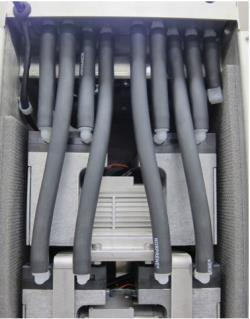
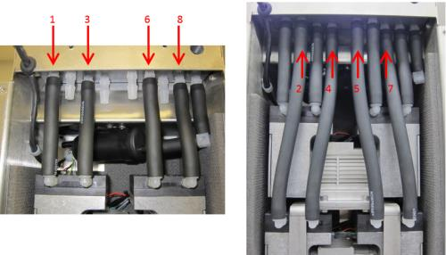
- Tilt the pump assembly out, and disconnect both power cables and the fan cable from the PCB. (The image below shows a view of the connections from behind.)

Caution—Connector crimps are fragile. Do not allow tension on the cables! 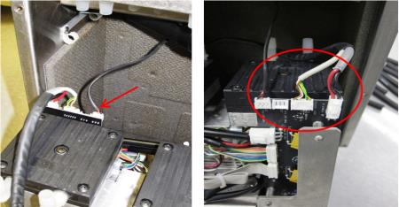
- Remove the pump assembly from the inner housing by sliding it completely out.
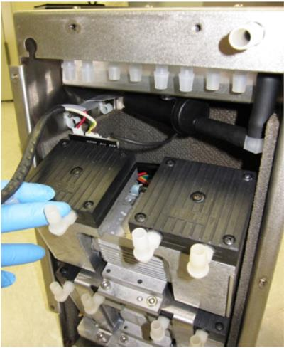
- Turn the pump assembly to view the side with the PCB. If only the top dual-head pump needs to be replaced, only disconnect the three connections circled in red for the top pump. If the bottom dual-head pump needs to be replaced, you will have to disconnect all six connections circled in red. The solid grey ribbon cable that connects the PCB to the motor controller will be reused on a new pump.
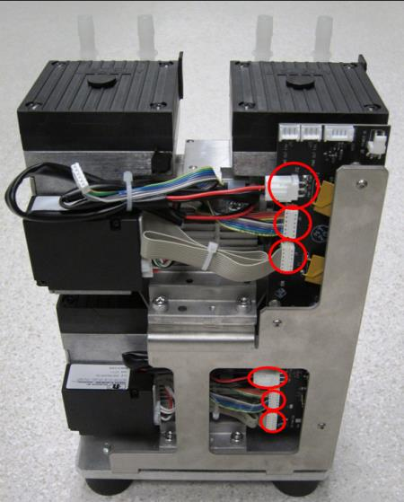
- Remove the four M6x14 screws (two on each side) that secure the top dual-head pump and take it off the pump bracket. If the top pump is the failed pump, there is no need to complete the next step (skip to Replacement section).
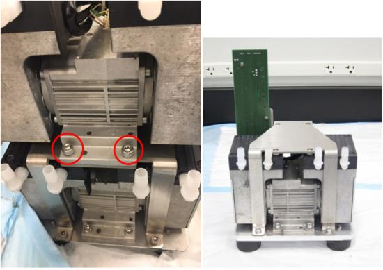
- To remove the bottom dual-head pump (only if bottom pump is the failed pump), remove the four M6x14 screws that hold the pump bracket to the bottom plate and remove the bracket. Then remove the four screws (two on each side) from the bottom plate that secure the pump and remove.
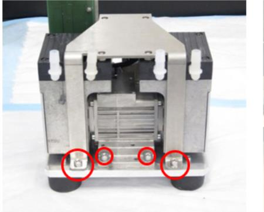


Replacement Procedure
- When replacing new dual-head pumps, make sure to orient the heads and cables in the same way as the old pumps, shown below:
- Remove the four pump head mounting screws on each of the vacuum pump heads. There may be foam tape on the edge of the pump, which can be cut as required to separate the pump head from the pump body.
- Rotate the pump head 90 degrees so that the input/output barbed fittings are opposite of the pump controller. Re-install the pump head mounting screws. Perform this operation on any to be replaced.

Note—The pump controller should be on the opposite side and should not overhang the pump base. 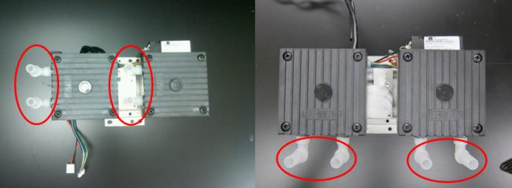
- To replace the bottom dual-head pump, screw in the four M6x14 screws and make sure to orient the pump to fit the notch in the T-shape on the base.
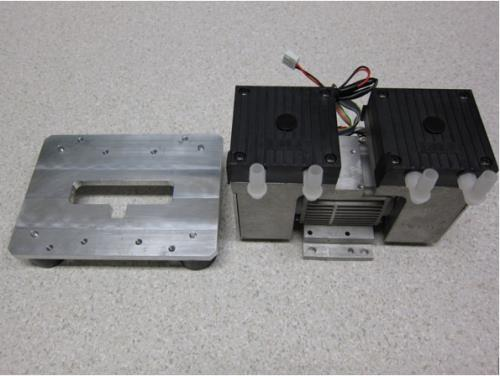
- Install the Upper Pump onto the Bracket with four M6x14 screws. The fittings of the pump should face the skinny legs of the bracket as shown.
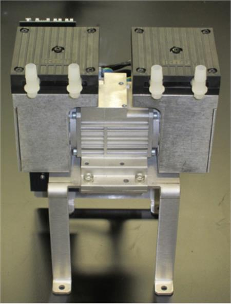
- Place the bracket with the top pump onto the base and make sure that the side with the PCB is facing the same side as the cables on the pump.
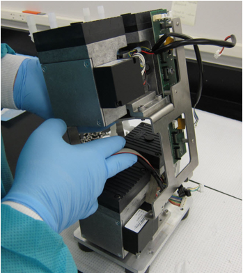
- Refer to the images below to connect pump cables to the motor controller.
Caution—Make sure that no cables or wires rest against any metal edges to avoid wire insulation damage caused by vibration during normal operation. 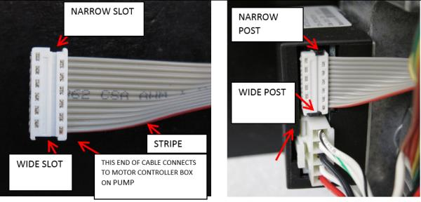
- Refer to the images below to connect pump cables to the PCB.
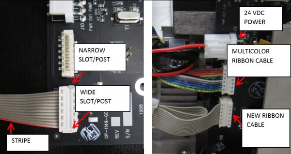
- When all pump cables are connected as shown below, zip tie the loose ribbon cables as shown.
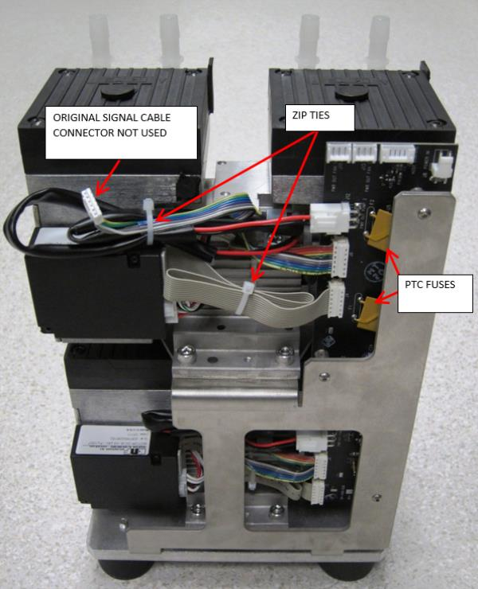
Optional Recommended Preliminary Pump Functionality Check
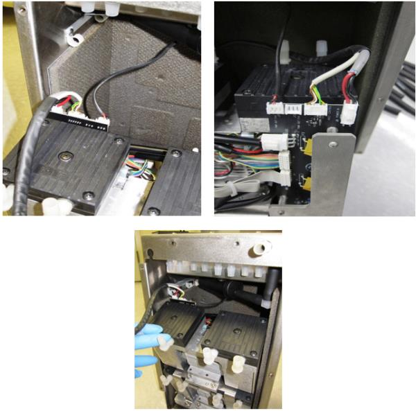
- Route the power and signal cables (inside black tubing) through the two clips of the inner housing and through the grommet in the top of the housing as shown. Gently pull the fan cable from the top of the grommet in the fan channel of the housing so that the excess cable resides in the upper channel and will not rub against the tops of the pumps.
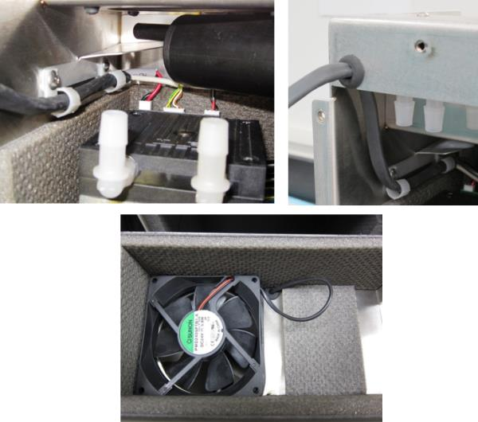
- Secure the pump assembly into Inner Housing by installing four M6x8 screws from bottom of inner housing.
- Install the eight black tubing back onto the pumps. Be VERY CAREFUL installing tubing to avoid breaking the barbed fittings. Apply a thin layer of High Vacuum Grease to the outside surface of the barbed fittings so that it will make installing the tubes easier.
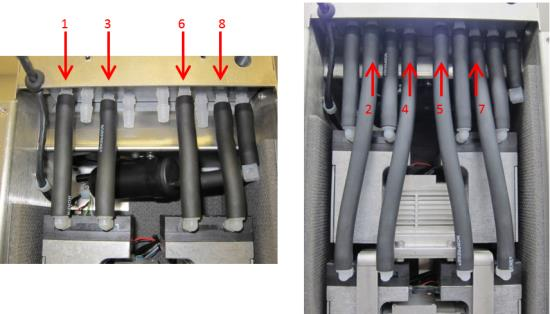
Optional Recommended Preliminary Vacuum Check
- Slide the inner housing into the outer housing.
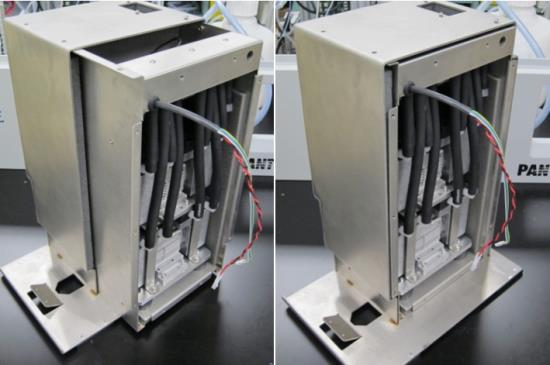
- Secure the Inner Housing with ten M5x10 screws.
Caution—It is very easy to strip the screw holes. Start all screws by hand before tightening. 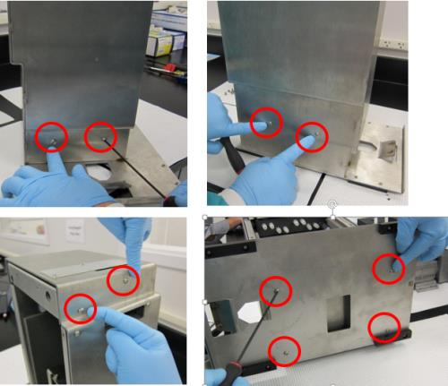
- Install front cover, secure with ten M5x10 using a 3 mm allen key.
Caution—It is very easy to strip the screw holes. Start all screws by hand before tightening.
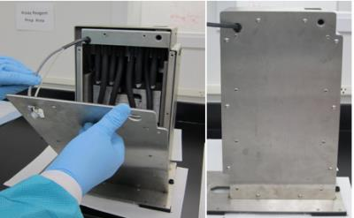
- Re-install the vacuum module.
 button at the top of the page to send feedback, comments, or change requests.
button at the top of the page to send feedback, comments, or change requests.